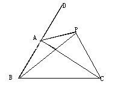
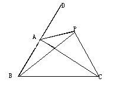

初二数学题,你会吗?(有点难度)
2009-08-04
如图,点P是△ABC的外角∠DAC平分线上的一点,你能比较PB+PC与AB+AC的大小关系吗?说说你的理由.

延长 BA 到 Q 使得 AQ=AC ，连接 PQ因为 P在外角平分线上，所以 三角形 AQP 全等于 三角形 ACP所以 PQ=PC, 三角形 BPQ 中 BP+PQ>BE=AB+AE也就是 BP+CP>AB+AC
2009-08-04
如图,点P是△ABC的外角∠DAC平分线上的一点,你能比较PB+PC与AB+AC的大小关系吗?说说你的理由.

延长 BA 到 Q 使得 AQ=AC ，连接 PQ因为 P在外角平分线上，所以 三角形 AQP 全等于 三角形 ACP所以 PQ=PC, 三角形 BPQ 中 BP+PQ>BE=AB+AE也就是 BP+CP>AB+AC